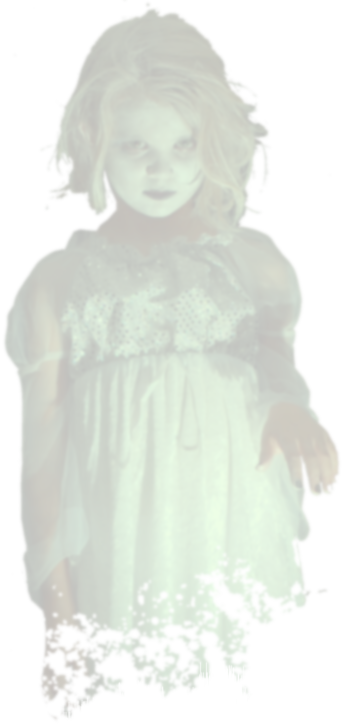

01:47 AM
GECE SIRADAN BİR GECEYDİ.
PC: WASD · MOUSE · F FENER · X İÇMOBİL: JOYSTICK · ETKİLEŞ · FENER
Bu oyunda yüksek seviyede ses ve ani ışık değişimleri vardır. Kulaklık takmanızı şiddetle tavsiye ediyoruz!
Oyunu geliştirirken sorunlar yaşayan yapımcımız (ben), bu oyunu oynamayı seçen sizler için iyi oyunlar dilerim.- KADİR